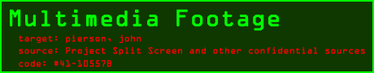
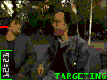
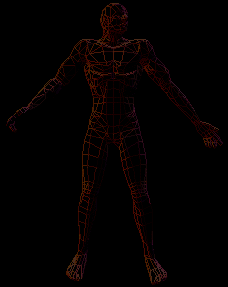
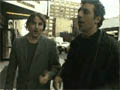
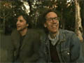

 |
 |
aka: The Office Tour.
source: Project Split Screen.
The following footage contains
scenes believed to be from John Pierson's HQ in Cold Spring, NY. Pay close attention to
the stacks of videotapes and the movie memorabilia.
source: Project Split Screen.
The following clip contains footage of John Pierson with noted accomplice Errol Morris. At this moment,
Morris' whereabouts are unknown. If captured however, Morris may the key in locating the elusive John
Pierson. |
 |
 Pierson with Richard Linklater and Eric Bogosian
source: Project Split Screen.
The following footage contains
scenes from the infamous "sUbUrBiA premiere" in New York City. We were lucky to obtain footage of Pierson
with both Linklater and Bogosian. Analyze this clip thoroughly. 
source: Project Split Screen.
The following clip contains footage of John Pierson with noted accomplice Richard Linklater. |

© 1997 - 1999 Grainy Pictures, Inc.